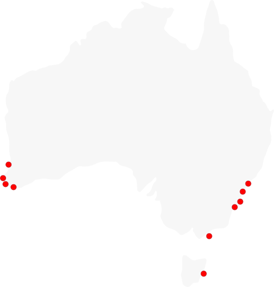

Hoo Ha Bay
Marrickville
Mass Mortality
This web experience uses audio as an integral part of the story telling.
Headphones are reccomeneded.
Firefox is the preffered browser as Chrome's shit when it comes to animations.
Hoo Ha Bay
Marrickville
Mass Mortality